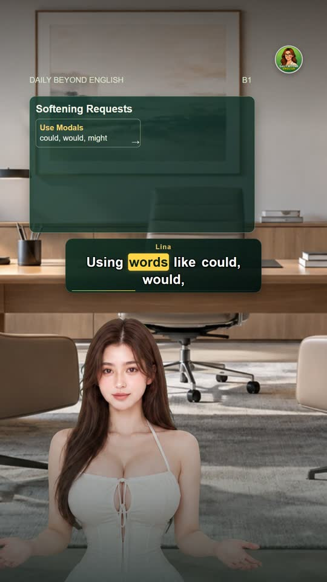
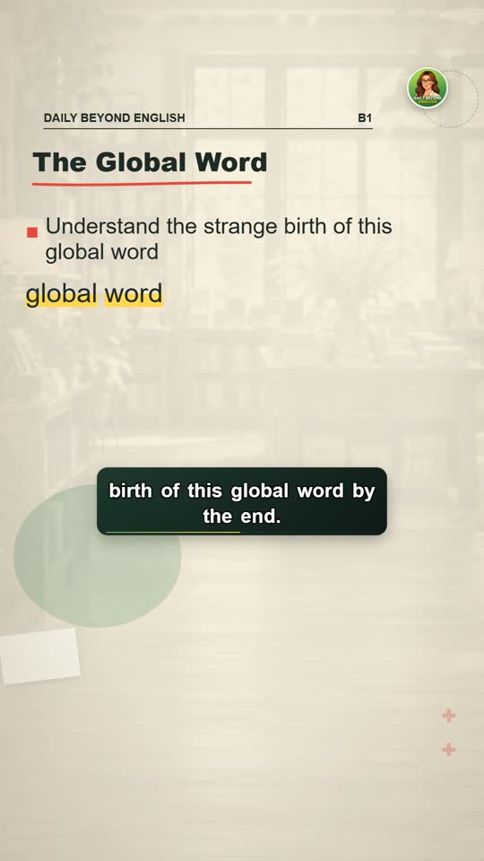
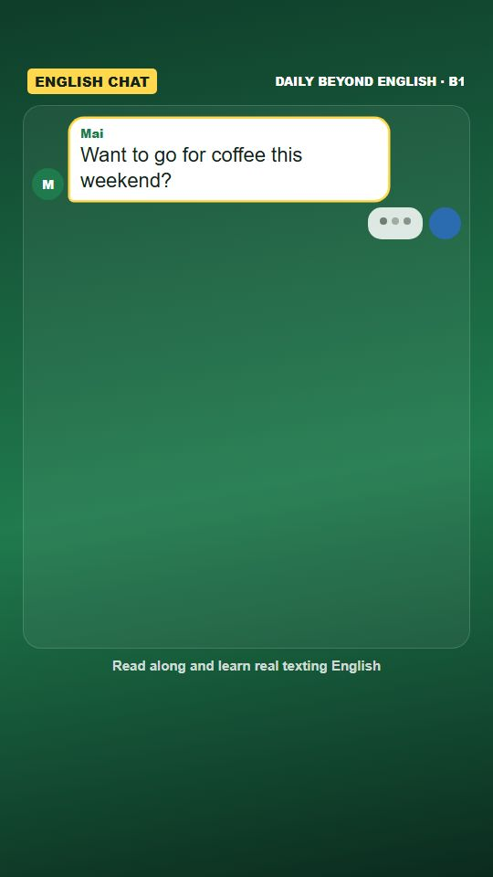

Tạo video
Chọn làm một video, hoặc nhiều Short cùng lúc. Hai cách dùng chung một danh sách loại video.
Một videodài 16:9 hoặc một Short, đi qua 3 chặng
Nhiều Short cùng lúcAI đề xuất 5–10 ý tưởng, làm một lần
1 · Loại video
Short có nhân vật, người dẫn hoặc hình ảnh (dọc 9:16)
 Hội thoạiHai nhân vật nói chuyện về một tình huống hằng ngày.2 nhân vật
Hội thoạiHai nhân vật nói chuyện về một tình huống hằng ngày.2 nhân vật
Người dẫnMột người dẫn giải thích một ý trước máy quay.người dẫn
VOXGiọng kể trên nền hình ảnh và chữ.người kểHọc thuật (tiếng Việt, 1–3 phút)
 Ngữ pháp dễ hiểuMột điểm ngữ pháp giảng theo bản chất, có bảng tổng kết.người kể
Ngữ pháp dễ hiểuMột điểm ngữ pháp giảng theo bản chất, có bảng tổng kết.người kể Gốc từ, tiền tố, hậu tốMột gốc và cả họ từ, tách từng từ.người kể
Gốc từ, tiền tố, hậu tốMột gốc và cả họ từ, tách từng từ.người kểMẫu chữ nhanh (dưới 1 phút)
 Từ của ngàyMột từ: nghĩa, cách đọc, ví dụ.người kể
Từ của ngàyMột từ: nghĩa, cách đọc, ví dụ.người kể Đừng nói / Hãy nóiMột lỗi hay gặp và cách nói tự nhiên.người kể
Đừng nói / Hãy nóiMột lỗi hay gặp và cách nói tự nhiên.người kể Tin tứcMột tin bằng tiếng Anh dễ hiểu.người kể
Tin tứcMột tin bằng tiếng Anh dễ hiểu.người kể
ChatĐoạn chat tin nhắn giữa hai người.2 nhân vậtNhóm theo mục đích thay vì theo kỹ thuật · rê chuột lên một thẻ để xem clip ví dụ · còn 7 loại nữa (Top 5, Quiz, Nghe, Nền mờ, Podcast chậm, Flashcard, Bạn chọn gì).
2 · Ý tưởng
AI sẽ đề xuất 7 ý tưởng; bạn sửa, bỏ, sắp xếp lại trước khi làm.
Xem trước
Ví dụ minh hoạ. Khi có ý tưởng, khung này hiện bản xem trước theo ý tưởng đang chọn.
3 · Lịch và làm video
Video lưu vào D:\Videos\Ngữ pháp bản chất · sau đó xem ở Hôm nay → Cần bạn.